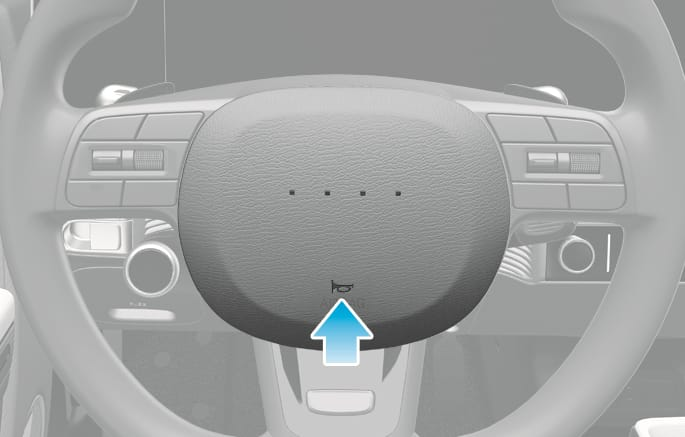

경음기 사용하기
주위에 위급한 상황을 알리거나 다른 운전자에게 주의를 줄 때 사용할 수 있습니다.
-
경음기의 과도한 사용을 피하고, 필요 이상의 힘으로 경음기를 누르지 마십시오.
-
경음기 작동부 위치를 정확하게 숙지하십시오. 필요한 순간에 경음기를 사용하지 못하면 위험한 상황이 발생할 수 있습니다.
-
경음기에 무리한 힘을 가하지 마십시오. 경음기가 오작동할 수 있습니다.
-
주먹으로 경음기 작동부를 내려치거나 날카로운 물체로 경음기 작동부를 누르지 마십시오. 경음기가 손상될 수 있습니다.
경음기 작동부를 누르면 경적음이 울립니다.

2C_Horn